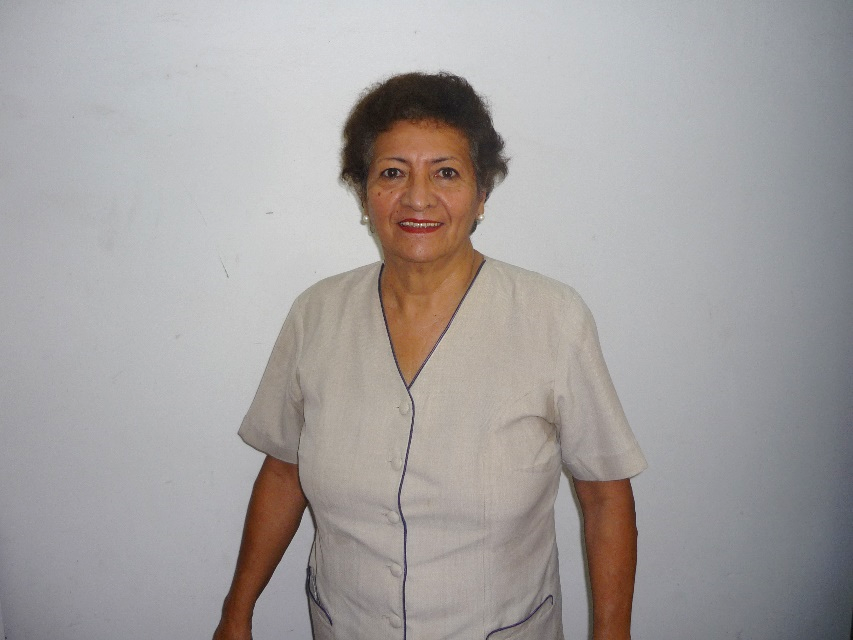
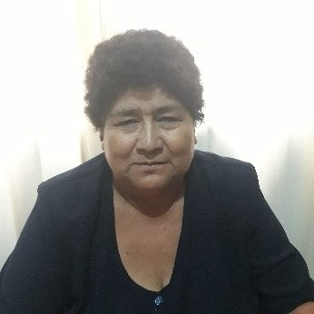
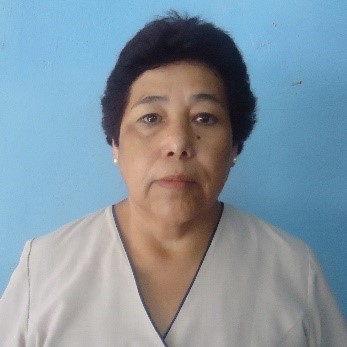
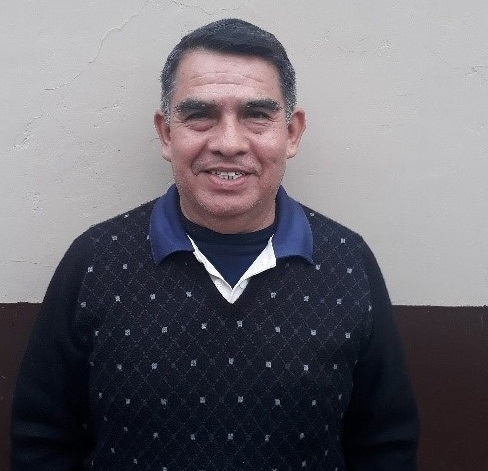
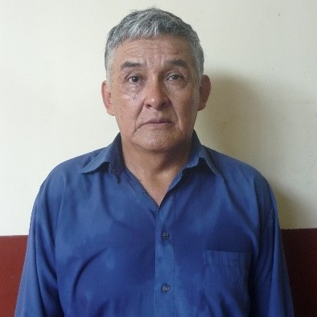
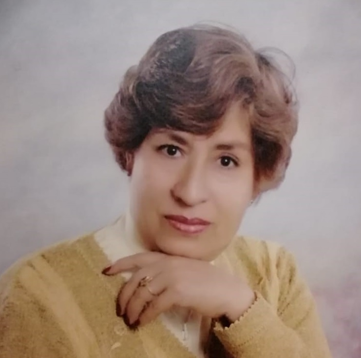
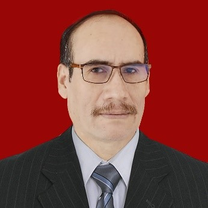
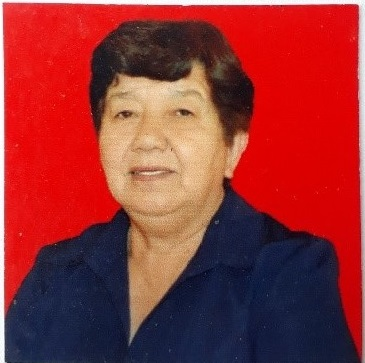

<div class="container">
    <div class="card">
        <div class="card-body">
            <h2 style="text-align: center;">UNIDAD EDUCATIVA PRIVADA “BOLIVIA”</h2> <br> 
            <h3>RESEÑA HISTORICA</h3> <br> 
            <p>
                La Unidad Educativa Privada Bolivia, abrió sus puertas a la niñez y juventud estudiosa mediante
                resolución
                ministerial Nro. 248/94 emitida el 23 de marzo de 1994, expedido por el Ministerio de Educación,
                constituyéndose con este documento en una institución educativa con vigencia legal, dando cobertura
                educativa al nivel inicial, primario y secundario. <br> <br>
                Fue creado gracias a la inquietud y vocación de servicio de un grupo selecto de maestros y maestras que
                tuvieron la feliz iniciativa de conformar un equipo multidisciplinario y plantear un proyecto ambicioso
                para
                fundar un establecimiento educativo que se constituya en una seria alternativa para la EDUCACIÓN de
                Yacuiba,
                ofreciendo una formación integral a niños y jóvenes en edad escolar desarrollando proyectos educativos
                que
                respondan a sus propias necesidades, problemáticas y a las exigencias del avance de la ciencia y la
                tecnología.<br> <br>
                Esta unidad educativa lleva el nombre de BOLIVIA para fortalecer la identidad Nacional y al mismo tiempo
                sentar soberanía en esta importante frontera de la nación; se ha elegido el 6 de agosto como fecha
                aniversario para realzar y rendir un justo homenaje a los libertadores Simón Bolívar y Antonio José de
                Sucre
                que nos legaron una Patria libre e independiente. <br> <br>
                En la presente coyuntura y con la implementación de la Ley 070 Avelino Siñani – Elizardo Pérez la Unidad
                Educativa Privada “BOLIVIA” se suma al proceso de transformación del Sistema Educativo Plurinacional a
                través de micropolíticas educativas ligadas a las líneas de acción estratégicas relacionadas con la
                educación intra-intercultural y plurilingüe; educación participativa; educación digna de Calidad;
                educación
                técnica tecnológica y educación inclusiva para consolidar el MESCP.
                En el transcurso de estos 25 años “BODAS DE PLATA” nuestra unidad educativa ha ido superando una serie
                de
                debilidades y amenazas en bien de su población estudiantil, pues desde su inicio promocionó varias
                generaciones de estudiantes, muchos de ellos en plena actividad laboral como brillantes profesionales o
                miembros activos de nuestra sociedad Yacuibeña o nacional. <br> <br>
                Como institución comprometida con la calidad educativa implemento la primera escuela de deportes,
                escuela de
                música, tinglado en su cancha polifuncional, la entrada folklórica, el festival de talentos, las ferias
                educativas especializadas y multidisciplinarias entre algunos; participa activamente en los juegos
                deportivos plurinacionales, en las olimpiadas científicas y OMACUBE y se encuentra en pleno proceso de
                consolidación del modelo educativo Socio-Comunitario Productivo.
            </p>
            <!-- Button trigger modal -->
            <div class="row justify-content-around">
                <div class="col-sm-4">
                    <button type="button" class="btn btn-primary" data-toggle="modal" (click)="openModal(template)">
                        MISIÓN & VISIÓN
                    </button>
                </div>
                <ng-template #template>
                    <div class="modal-header">
                    </div>
                    <div class="modal-body">
                        <!-- Dentro del Modal -->
                        <div class="row">
                            <div class="col-sm-6">
                                <div class="card">
                                    <div class="card-body">
                                        <h5 class="card-title">VISIÓN</h5>
                                        <p class="card-texts">La Unidad Educativa Privada “Bolivia” es una institución
                                            que
                                            brinda
                                            una educación de calidad, formando ciudadanos conscientes de su realidad y
                                            capaces
                                            de enfrentar los desafíos del entorno con un espíritu crítico, reflexivo,
                                            propositivo siendo participativos, investigadores, practicando valores
                                            sociocomunitarios que le permita vivir bien.</p>
                                    </div>
                                </div>
                            </div>
                            <div class="col-sm-6">
                                <div class="card">
                                    <div class="card-body">
                                        <h5 class="card-title">MISIÓN</h5>
                                        <p class="card-texts">La misión de la Unidad Educativa Privada “Bolivia” es la de
                                            formar
                                            integral y holísticamente a los(as) estudiantes mediante la concreción de la
                                            Ley
                                            Avelino Siñani - Elizardo Pérez basados en la vida comunitaria y el respeto
                                            a
                                            los
                                            derechos fundamentales individuales, colectivos y a la Madre Tierra;
                                            respondiendo a
                                            los desafíos del siglo XXI.</p>
                                    </div>
                                </div>
                            </div>
                        </div>
                        <!-- Fin dentro Modal -->
                        <div class="modal-footer">
                            <button type="button" class="btn btn-secondary" (click)="closeModal()"><i
                                    class="material-icons">
                                    exit_to_app
                                </i>Cerrar</button></div>
                    </div>
                </ng-template>
                <!-- Button trigger modal -->

                <div class="col-sm-4">
                    <button type="button" class="btn btn-primary" data-toggle="modal" (click)="openModals(templates)">
                        SOCIOS
                    </button>
                </div>
                <ng-template #templates>
                    <div class="modal-header">
                    </div>
                    <div class="modal-body">
                        <!-- Dentro del Modal -->
                        <div class="card-deck">
                            <div class="row">
                                <div class="card">
                                    
                                    <div class="card-body">
                                        <h5 class="card-title">Profa. Rosa Ustarez Baldiviezo</h5>
                                        <p class="card-text">Lugar de nacimiento: Yacuiba – Tarija </p>
                                        <p class="card-text">Fecha de nacimiento: 09 de octubre de 1947</p>
                                        <p class="card-text">Especialidad: Ciencias Biológicas – Química</p>
                                        <p class="card-text">Años de servicio: 48 años</p>
                                        <p class="card-text">LEMA: Responsabilidad y compromiso</p>
                                    </div>
                                </div>
                                <div class="card">
                                    
                                    <div class="card-body">
                                        <h5 class="card-title">Profa. Lidia Ortiz Rodas</h5>
                                        <p class="card-text">Lugar de nacimiento: Padilla – Chuquisaca</p>
                                        <p class="card-text">Fecha de nacimiento: 21 de marzo de 1956</p>
                                        <p class="card-text">Especialidad: Estudios Sociales Sec.</p>
                                        <p class="card-text">Años de servicio: 35 años</p>
                                        <p class="card-text">LEMA: Trabajar con resposabilidad y dedicación</p>
                                    </div>
                                </div>
                                <div class="card">
                                    
                                    <div class="card-body">
                                        <h5 class="card-title">Profa. Carmen Ofelia Osinaga Céspedes</h5>
                                        <p class="card-text">Lugar de nacimiento: Yacuiba – Tarija</p>
                                        <p class="card-text">Fecha de nacimiento: 24 de abril de 1952</p>
                                        <p class="card-text">Especialidad: Ciencias Biológicas – Química</p>
                                        <p class="card-text">Años de servicio: 43 años</p>
                                        <p class="card-text">LEMA: Lo difícil se resuelve con voluntad y perseverancia
                                        </p>
                                    </div>
                                </div>
                                <div class="card">
                                    
                                    <div class="card-body">
                                        <h5 class="card-title">Prof. Óscar Abdón Guzmán Maldonado</h5>
                                        <p class="card-text">Lugar de nacimiento: Lallagua – Potosí </p>
                                        <p class="card-text">Fecha de nacimiento: 30 de julio de 1959</p>
                                        <p class="card-text">Especialidad: Ciclo básico – N. Primario</p>
                                        <p class="card-text">Años de servicio: 37 años</p>
                                        <p class="card-text">LEMA: Educar para dejar huellas</p>
                                    </div>
                                </div>
                            </div>
                            <div class="row">
                                <div class="card">
                                    
                                    <div class="card-body">
                                        <h5 class="card-title">Prof. Ángel María Chamoso Burgos</h5>
                                        <p class="card-text">Lugar de nacimiento: Oropeza – Chuquisaca </p>
                                        <p class="card-text">Fecha de nacimiento: 02 de octubre de 1955</p>
                                        <p class="card-text">Especialidad: Matemáticas – C. Naturales</p>
                                        <p class="card-text">Años de servicio: 35 años</p>
                                        <p class="card-text">LEMA: No dejar para mañana lo que puedes hacer hoy</p>
                                    </div>
                                </div>
                                <div class="card">
                                    
                                    <div class="card-body">
                                        <h5 class="card-title">Profa. Elba Daisy Romero Gonzáles</h5>
                                        <p class="card-text">Lugar de nacimiento: Oropeza – Chuquisaca</p>
                                        <p class="card-text">Fecha de nacimiento: 17 de diciembre de 1948</p>
                                        <p class="card-text">Especialidad: Primaria</p>
                                        <p class="card-text">Años de servicio: 52 años</p>
                                        <p class="card-text">LEMA: Enseñar con el corazón para triunfar</p>
                                    </div>
                                </div>
                                <div class="card">
                                    
                                    <div class="card-body">
                                        <h5 class="card-title">Prof. Gualberto Grimaldos Quinteros</h5>
                                        <p class="card-text">Lugar de nacimiento: Tomás Frías - Potosí</p>
                                        <p class="card-text">Fecha de nacimiento: 19 de marzo de 1960</p>
                                        <p class="card-text">Especialidad: Ciencias Sociales Sec.</p>
                                        <p class="card-text">Años de servicio: 30 años</p>
                                        <p class="card-text">LEMA: No soy arquitecto para construir edificios, pero me
                                            gusta
                                            construir sueños y valores para la vida</p>
                                    </div>
                                </div>
                                <div class="card">
                                    
                                    <div class="card-body">
                                        <h5 class="card-title">Profa. Rosa Myrna Van Geendertailen Sánchez</h5>
                                        <p class="card-text">Lugar de nacimiento: Yacuiba – Tarija</p>
                                        <p class="card-text">Fecha de nacimiento: 30 de enero de 1950</p>
                                        <p class="card-text">Especialidad: Leguaje – Literarua Sec.</p>
                                        <p class="card-text">Años de servicio: 56 años</p>
                                        <p class="card-text">LEMA: Toda mi entrega, sabiduría y cariño para mis docentes
                                            y
                                            mis alumnos camiando hacia la excelencia</p>
                                    </div>
                                </div>
                            </div>
                            <!-- Fin dentro Modal -->
                            <div class="modal-footer">
                                <button type="button" class="btn btn-secondary" (click)="closeModal()"><i
                                        class="material-icons">
                                        exit_to_app
                                    </i>Cerrar</button></div>
                        </div>
                    </div>
                </ng-template>
            </div>
            <!-- Button trigger modal -->

        </div>

    </div>
</div>